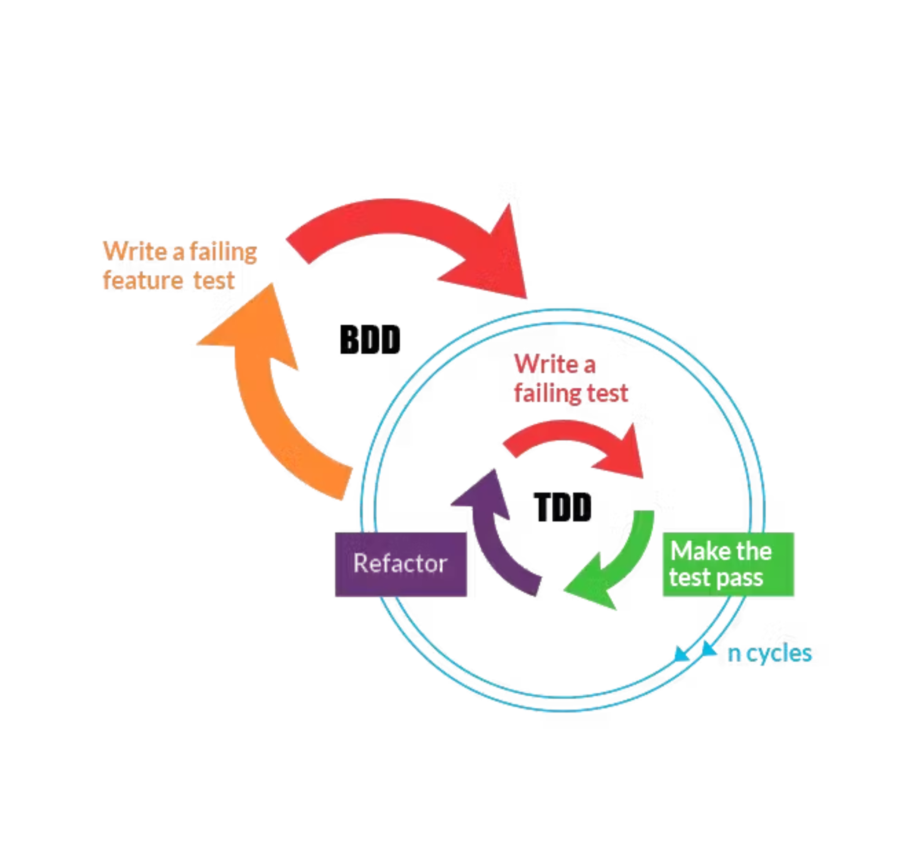

## Teste com Propósito **Maximizando a Manutenibilidade**
### Avisos
- Não fique com dúvidas, pergunte! - No final irei responder o que deixarem no chat.
> A cada 1000 linhas de código criadas, 70 novos bugs são criados e 15 serão descobertos pelo seu cliente. RODRIGUES, 2017
### FBI - 2005 💸 US$ 170 mi
**Desastre:** Virtual Case File (VCF), um sistema em rede para rastrear casos criminais projetado para substituir os arquivos de papel com 730 mil linhas de código e centenas de erros. **Causa:** Má gestão, falhas de planejamento, tecnologia ultrapassada e mínimo de testes, resultou em um sistema complexo e inutilizável.
Manutenibilidade
<iframe src="https://giphy.com/embed/Sk3KytuxDQJQ4" width="380" height="380" frameBorder="0" class="giphy-embed" allowFullScreen></iframe>
Facilidade de modificação ou adaptação de um software *"tempo médio requerido para efetivar a revisão do software para eliminar um erro".* A etapa de manutenção pode consumir até 65% do custo total de um produto.
### Testes *Uma das formas de garantir Manutenibilidade* <iframe src="https://giphy.com/embed/11ZSwQNWba4YF2" width="150" height="380" frameBorder="0" class="giphy-embed" allowFullScreen></iframe>
- Garantem que o software está funcionando com qualidade - Devem melhorar a manutenibilidade do sistema - Devem manter o sistema estável
### Testar de qualquer jeito resolve?
<iframe src="https://giphy.com/embed/js3SsYYvMiWLC" width="370" height="370" frameBorder="0" class="giphy-embed" allowFullScreen></iframe>
## Hora do Quiz! Acesse **www.menti.com** Com o código **5619 6829**
### Identificando testes ruins - Dificuldade de compreensão do que está sendo testado - Linguagem especifica ao software - Multiplos conceitos por teste
<iframe src="https://giphy.com/embed/TxfZ3ARFjpWgELUMCI" width="480" height="480" frameBorder="0" class="giphy-embed" allowFullScreen></iframe>
> Testa o texto gravado > Deve salvar o texto no Recorder > Deve chamar a função recordName ao escrever o texto e clicar em gravar
### Exemplos de testes ruins **Componente de Input de texto**
### Como escrever bons testes?
- Preparar o caminho feliz e o triste "*inputs* válidos/inválidos" - Validar cada *output* possível - Separar Arrange, Act e Assert - Utilizar a técnica *BDD*
## Hora do Quiz! Acesse **www.menti.com** Com o código **5619 6829**
### BDD **Behavior Driven Development**

**Dado** (Given) **Quando** (When) **Então** (Then). **E** (And), **Mas** (But) > **Dado** contexto **Quando** eventos **Então** resultado
### Sintaxe Gherkin
#### Como funciona o BDD?
## Alternativa ao BDD Usando Gherkin para melhorar os testes
<!-- Integração/componente + unidade --> ### Antes *Deve chamar a função recordName ao escrever o texto e gravar*
### Com Gherkin *Dado que estou preenchendo a lista Quando digitar um nome E clicar em gravar Então o nome deve ser salvo na lista 'Names'*
### Antes *Deve chamar a função recordName e a api ao executar*
### Com Gherkin *Dado a função recordName Quando executada Então deve chamar a API*
### Motivos para usar o Gherkin
- Facilidade de entendimento do que está sendo testado. - Visão do todo. - Melhoria da comunicação - Documentação dinâmica - Garantia de manutenibilidade do projeto
## Bora testar com legibilidade?
<iframe src="https://giphy.com/embed/xT1R9Mu1CCG7HiIezK" width="480" height="332" frameBorder="0" class="giphy-embed" allowFullScreen></iframe>
## Referências RODRIGUES, André Cripa. O custo efetivo dos bugs no desenvolvimento de softwares. Interaktiv, 05 mai. 2017. Disponível em: https://shre.ink/a5yS. Acesso em: 1 ago. 2023.